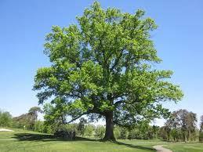

Pin Oak 'quercus palustrus'
Quercus palustris, the pin oak or swamp Spanish oak, is an oak in the red oak section.
Quercus palustris, the pin oak or swamp Spanish oak, is an oak in the red oak section.
Acer saccharinum, commonly known as silver maple is a species of maple native to the eastern and central United States
Cornus is a genus of about 30 to 60 species of woody plants in the family Cornaceae, commonly known as dogwoods.
Pinus strobus is a large pine native to eastern North America.